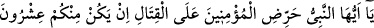
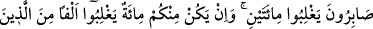
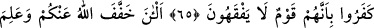
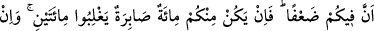
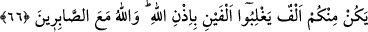
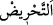

SAVAŞTA SABIR VE SEBAT
65. Ey peygamber, müminleri savaşa teşvik et. Eğer sizden sabreden yirmi kişi
olsa onlar iki yüz kişiyi yenerler. Sizden yüz kişi olsa onlar kâfirlerden bin kişiyi
yenerler. Çünkü o kâfirler, anlamaz bir topluluktur.
66. Şimdi Allah sizden (yükü) hafifletti ve sizde zaaf bulunduğunu bildi. Bundan
böyle sizden sabreden yüz kişi olsa, iki yüz (kâfiri) yenerler. Ve eğer sizden bin kişi
olsa Allah’ın izniyle iki bin (kâfir)i yenerler. Allah, sabredenlerle beraberdir.
“Ey” kadri yüksek “peygamber, müminleri savaşa teşvik et.” yani müminleri savaşa
teşvikte mübalağa göster. Sevap ya da ganimet va‘dederek onları bu konuda teşvik et.
“”, insanın başkasını bir şeyi yapmaya teşvik etmesi ve yönlendirmesidir.
Bunu o şekilde yapar ki, o işi yapmaktan geri kalırsa neredeyse helâk olacağı tarzda
yapar. Buna göre âyet müminlere işaret etmektedir ki, eğer Allah Rasûlü’nün kendilerini
savaşa teşvik etmesinden sonra, savaştan geri kalacak olurlarsa helâkle yüzyüze
geleceklerdir.
Teşvik, insanların kendisine uyması için ancak bir işi bizzat yaptıktan sonra olur. İşte
bu sebepledir ki, harp şiddetlendiği zaman Nebî (a.s.) düşmana daha da yaklaşırdı.
Nitekim Hz. Ali (r.a.) demiştir ki: “İki topluluk birbiriyle karşılaşıp harp kızıştığı
anlarda Rasûlullah (s.a.v.)’e sığınır, O’nunla korunurduk. Düşmana O’ndan daha yakın
kimse olmazdı.”
Mısır Fâtihi Sultan Selim, der ki:
Düşman askeri Kafıtan Kafıa kadar olsa
Allah hakkı için o savaştan yüz çevirmem
Kılıcımı sabah aydınlığı gibi kınından çıkardığım zaman
Güneş gibi doğarım, küfür karanlığından aydınlanır cihân.
Bu âyet cihadın üstünlüğünü ortaya koymaktadır. Böyle olmasaydı teşvik edilmezdi.
Bir hadiste şöyle buyurulmuştur: “Allah yolunda cihad eden mücâhidin yaptığına